Для клиник и стоматологий
Виджеты* для связи
с пациентами
Получайте обращения с сайта. Автоматизируйте звонки по заявкам и распределяйте запросы между сотрудниками
Подобрать решение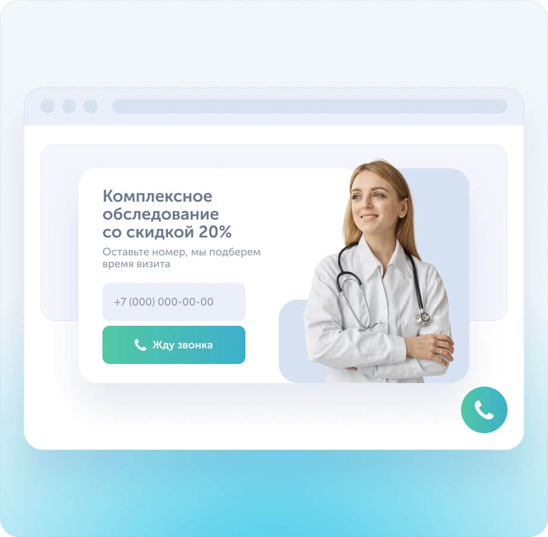
-
Больше способов обратиться
Звонки, формы, чат и MAX
-
Меньше ручного прозвона
Автоматические звонки по заявкам
-
Контроль обработки
Записи разговоров и история чатов
Проблемы медицинских сайтов
Мы понимаем, с какими задачами вы сталкиваетесь каждый день, и предлагаем инструменты для их решения
-
Пациенты уходят
с сайта без записиПоказывайте формы заявок и предложения в подходящий момент, чтобы посетители оставляли контакты до ухода с сайта
-
Сложно быстро
связаться с клиникойОбъедините звонки, мессенджеры и формы заявок в одной мультикнопке, чтобы пациент мог выбрать удобный способ связи
-
Администраторы
пропускают звонкиНастройте автоматический перезвон по пропущенным вызовам, чтобы возвращаться к обращениям пациентов без ручного набора номера
Как виджеты работают в клиниках разного масштаба
От одного администратора до команды в нескольких филиалах — настройте обработку обращений под свои задачи
Администратор не смог ответить, так как занят приемом? Позвольте пациенту оставить контакты для обратной связи
- Обратный звонок
- Посетитель оставляет контакты
-
Администратору поступает
обратный звонок
Помогите пациенту обратиться по нужному направлению, а сотрудникам — обработать запрос
- Обратный звонок с выбором направления на форме
- Посетитель оставляет контакты
- Звонок поступает сотруднику из выбранного направления
Настройте распределение звонков между филиалами и работу чатов с нескольких сайтов
- Обратный звонок с выбором интересующего филиала
- Посетитель оставляет контакты
- Звонок поступает администратору выбранного филиала
7 инструментов, чтобы получать и обрабатывать обращения
Выберите инструмент и посмотрите, какую задачу он решает
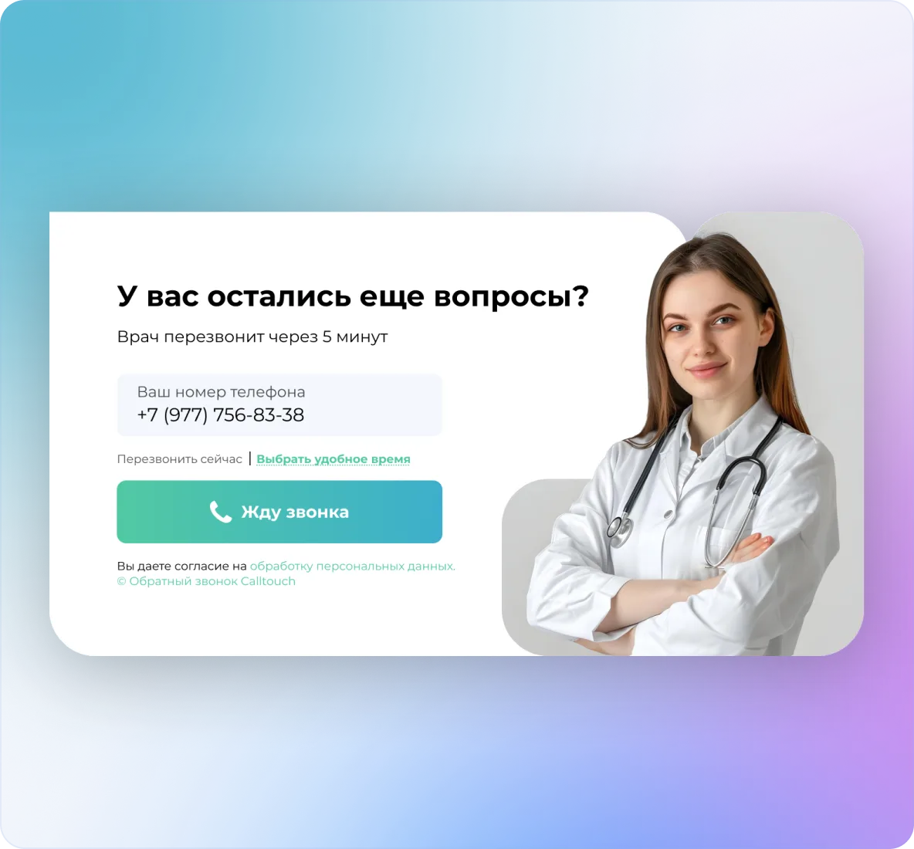
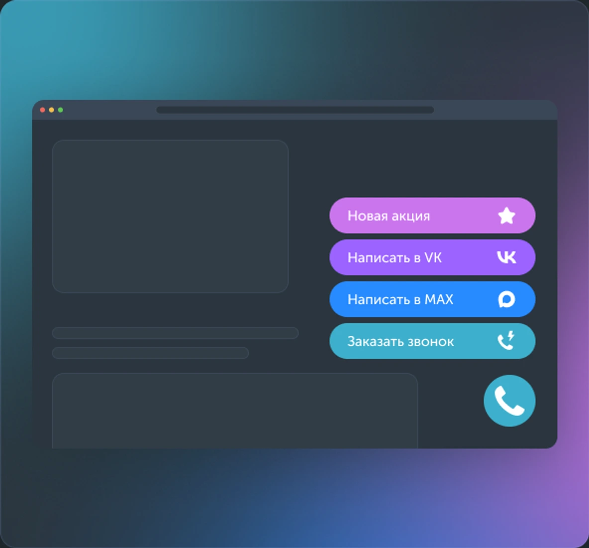
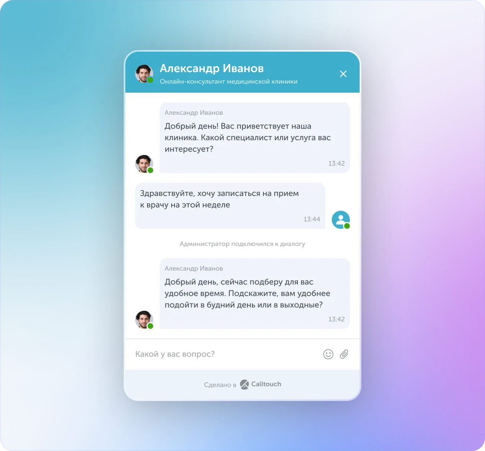
-
Обратный звонок
Форма на сайте, через которую посетители оставляют контакты для связи с менеджером, если не хотят звонить сами
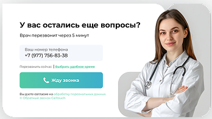
-
Мультикнопка
Кнопка на сайте, где собраны все способы связи: звонок, чат и мессенджеры, соцсети
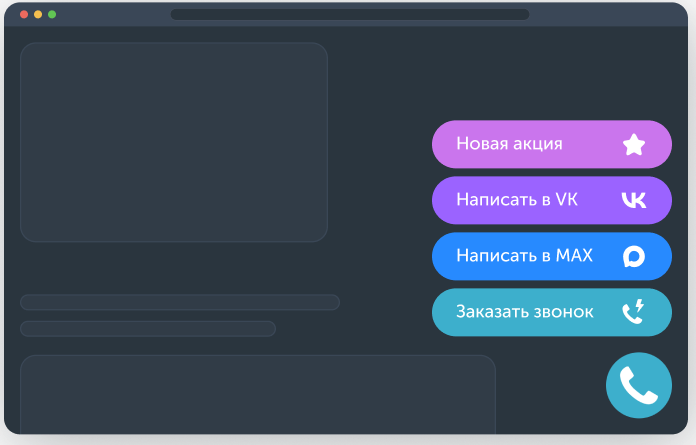
-
Умная заявка
Всплывающая форма сбора контактов, которая появляется на основе поведения пользователя в самый подходящий момент
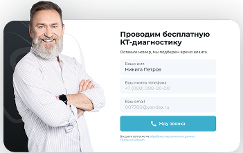
-
Онлайн-чат
Чат для оперативного решения вопросов клиентов и стимулирования продаж прямо в момент выбора товара без звонков
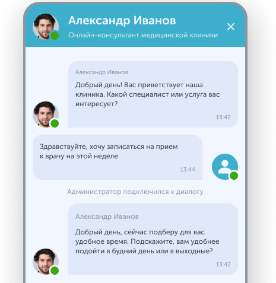
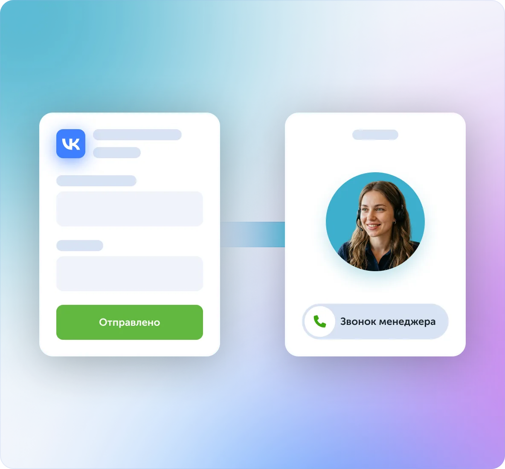
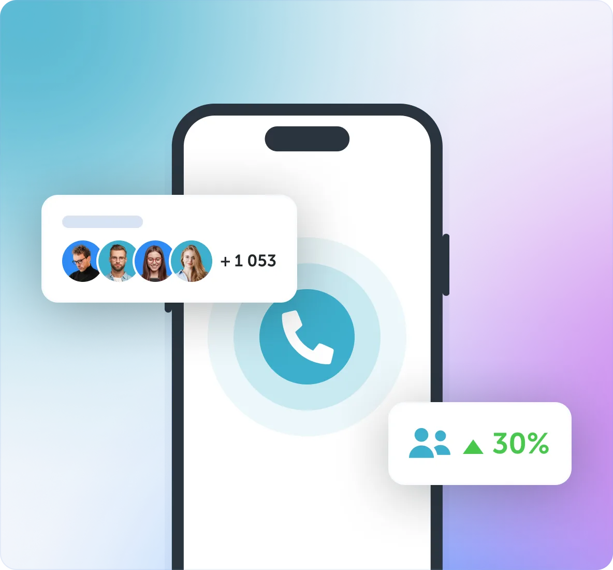
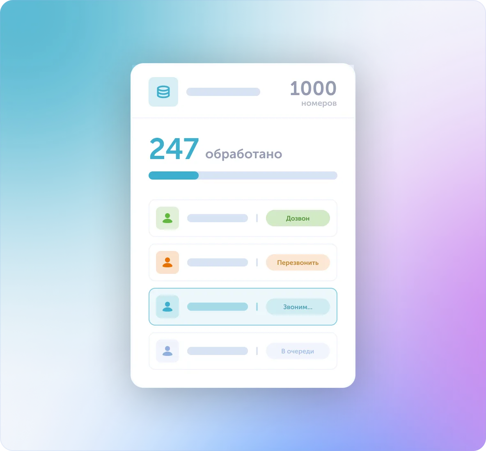
-
Прозвон лид-форм*
Автоматически передавайте заявки из соцсетей менеджерам, чтобы оперативно связываться с клиентами
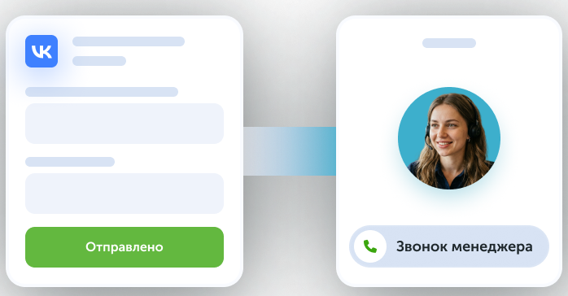
-
Автопрозвон заявок с сайта
Автоматически связывайтесь с клиентом сразу после заполнения формы на сайте и передавайте звонок оператору
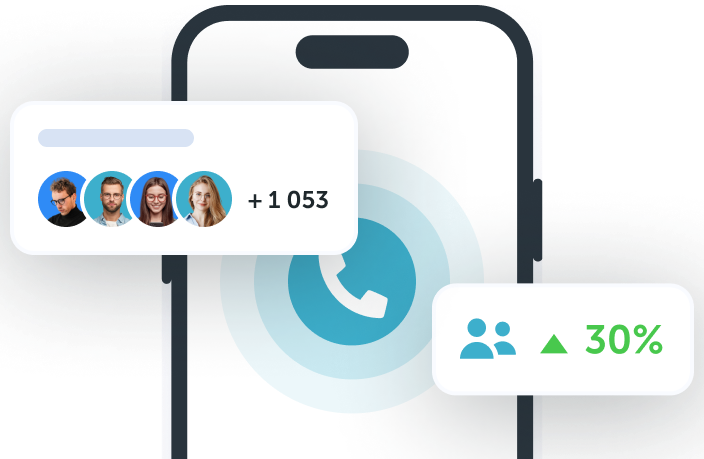
-
Автопрозвон номеров из базы
Автоматизируйте массовый обзвон клиентской базы — передайте рутинную работу системе
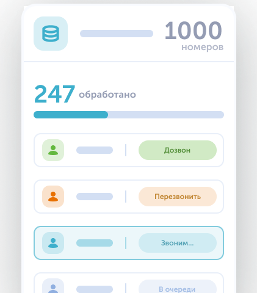
Примеры кастомизированных виджетов
1/13
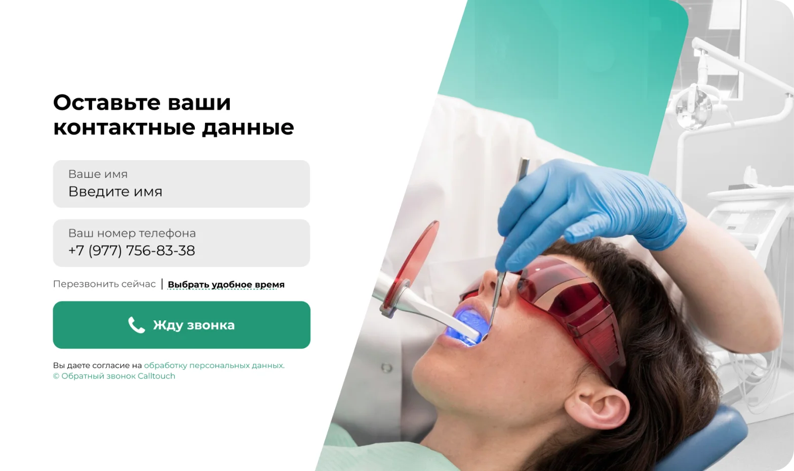
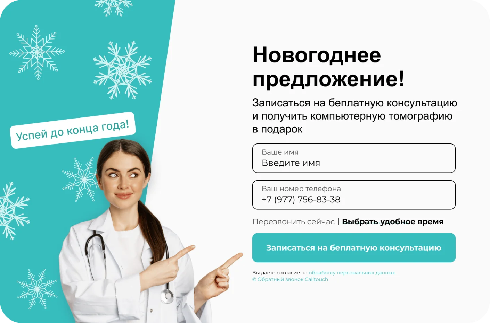